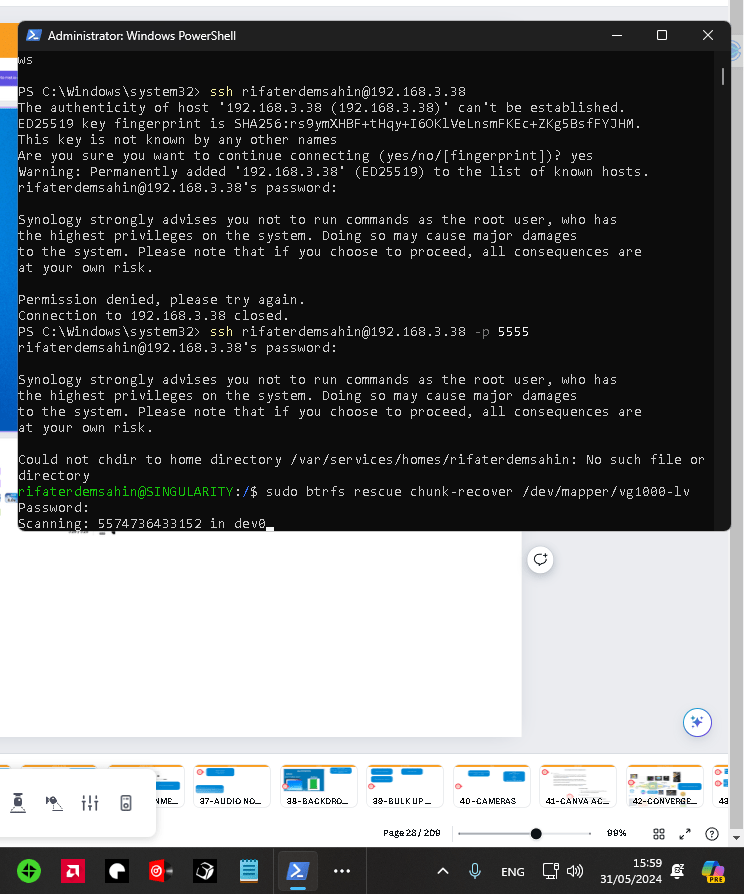

Hard Drive recovery taking time

The time it takes for the btrfs rescue chunk-recover command to complete can vary significantly depending on several factors:
-
Size of the filesystem: Larger filesystems will take longer to scan and recover.
-
Amount of data: More data means more to scan and potentially recover.
-
Disk speed: Faster disks (e.g., SSDs) will complete the process more quickly than slower disks (e.g., HDDs).
-
System load: If the system is under heavy load or if there are other intensive processes running, this could slow down the scan.
-
Errors and corruption: The extent of errors or corruption can also affect the duration of the scan.
In your case, since the command output shows it's scanning 5574736433152 in dev0, which seems to be a large number (potentially indicating the number of bytes or blocks), it suggests that the filesystem or the amount of data to be scanned is substantial.
As a rough estimate, for a filesystem size of a few terabytes on a reasonably fast system, this process can take several hours to a day. However, for precise timing, monitoring the process and checking for updates in the terminal will give you a better idea of its progress.
If you need a more accurate prediction, providing details about the filesystem size, disk type, and current system load can help refine the estimate.
Given that you have a 7 TB filesystem, the time required for the btrfs rescue chunk-recover command can still vary based on several factors. Here are some estimates based on typical scenarios:
-
On a relatively fast system with SSDs: Assuming the system is not under heavy load and there are no significant errors or corruption, it might take around 6 to 12 hours.
-
On a system with HDDs: For traditional spinning hard drives, the process could take significantly longer, potentially anywhere from 12 hours to a couple of days, depending on the speed of the drives and the health of the filesystem.
Factors to Consider:
-
Disk I/O Speed: SSDs can read and write data much faster than HDDs, which can significantly reduce the time.
-
System Load: If the system is performing other tasks or is under heavy load, it will take longer.
-
Filesystem Condition: If there are many errors or a lot of corruption, the recovery process will take longer.
To get a more precise estimate, you can:
-
Monitor the process: Keep an eye on the terminal output to see how quickly it progresses through the data.
-
Check System Resources: Use tools like
top,htop, oriostatto see how much disk I/O is being used and to check for bottlenecks. -
Run a Test: If possible, run a similar scan on a smaller partition or a similarly sized dummy dataset to estimate the time required.
It's important to be patient and allow the process to complete without interruption, as interrupting the scan can lead to further complications.
if it was ssd>
For a NAS using a 5600 RPM SSD, the performance characteristics are somewhat unusual, as SSDs typically do not have a rotational speed (RPM). RPM is usually a measure associated with HDDs. Assuming this might be a typo or a misunderstanding and that you are actually using a typical SSD designed for NAS (Network Attached Storage), here are some considerations and a rough estimate:
Assumptions:
-
SSD Performance: SSDs generally have faster read/write speeds compared to HDDs. Even though NAS-specific SSDs might be optimized for endurance and reliability rather than peak performance, they should still be much faster than HDDs.
-
System Configuration: Assuming the NAS is not under heavy load and the Btrfs filesystem is not heavily corrupted.
Estimate:
-
SSD Read/Write Speed: Typical SSDs used in NAS can achieve read/write speeds in the range of 300-500 MB/s.
-
Data Size: 7 TB (approximately 7,000,000 MB).
Calculation:
If we assume an average effective speed of 350 MB/s (accounting for some overhead and less-than-peak performance during recovery), we can estimate:
[ \text{Time} = \frac{\text{Total Data}}{\text{Average Speed}} ]
[ \text{Time} = \frac{7,000,000 \text{ MB}}{350 \text{ MB/s}} ]
[ \text{Time} \approx 20,000 \text{ seconds} ]
[ \text{Time} \approx 333 \text{ minutes} ]
[ \text{Time} \approx 5.5 \text{ hours} ]
Summary:
For a 7 TB filesystem on an SSD with an effective speed of 350 MB/s, it could take approximately 5.5 to 6 hours to complete the scan and recovery process. This is a rough estimate and actual times may vary based on the factors previously mentioned (system load, extent of corruption, etc.).
Monitoring:
To get a more precise idea of the time required, monitor the progress periodically and adjust expectations based on observed speed.
For normal hard drives, especially those with a rotational speed of 5600 RPM, the time required for the btrfs rescue chunk-recover process can be significantly longer than with SSDs. Here are the key points to consider:
-
Average Speed of 5600 RPM HDDs: Typically, these hard drives have read/write speeds ranging from 80 to 150 MB/s, depending on various factors like the specific model, age, and condition of the drive.
-
Data Size: 7 TB (approximately 7,000,000 MB).
Calculation:
If we assume an average effective speed of 100 MB/s (accounting for variations in performance):
[ \text{Time} = \frac{\text{Total Data}}{\text{Average Speed}} ]
[ \text{Time} = \frac{7,000,000 \text{ MB}}{100 \text{ MB/s}} ]
[ \text{Time} = 70,000 \text{ seconds} ]
[ \text{Time} = \frac{70,000}{60} \text{ minutes} ]
[ \text{Time} \approx 1167 \text{ minutes} ]
[ \text{Time} \approx 19.5 \text{ hours} ]
Summary:
For a 7 TB filesystem on a 5600 RPM HDD, it could take approximately 19.5 to 20 hours to complete the scan and recovery process. This is a rough estimate, and actual times may vary based on:
-
System Load: Heavier system load can slow down the process.
-
Extent of Corruption: More corruption may lead to longer recovery times.
-
Drive Condition: Older or failing drives may perform more slowly.
Monitoring:
To get a more accurate estimate, it’s recommended to monitor the process periodically:
-
Check Progress: Look at the progress updates in the terminal.
-
System Resource Usage: Use tools like
top,htop, oriostatto monitor disk I/O and system load.
By keeping an eye on the process, you can better estimate the remaining time and ensure the recovery is progressing as expected.
Imported from rifaterdemsahin.com · 2024